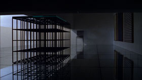

Experience in Material 52:DUBHOUSE

Suzuki Ryoji, Kei Shichiri – Japan 2012 – 15 Min. – 35mm
R+B+P: Suzuki Ryoji, Kei Shichiri – K: Takahashi Tetsuya, Kei Shichiri – S: Kei Shichiri – M: Ikeda Takumi – V: Suzuki Ryoji
Aus den Übergängen von Licht zu Dunkelheit entsteigt eine imaginäre Architektur-in-der-Architektur. Räume und Objekte erscheinen wie animiert.
Suzuki Ryoji, geb. 1944, Japan. Studium der Architektur in Tokio. Seit 1973 Serie „Experience in Material“, in der er Film, Architektur, Bücher, Fotografie und Kunst zusammenbringt. Verfasser von Büchern über Architektur.
Kei Shichiri, geb.1967, Japan. Filmemacher und Dramatiker.